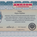

Мы работаем в прекрасной Команде! Наши репетиторы – профи в своей области точных и естественных наук, каждый из них владеет всеми нюансами теста ЗНО по своему предмету, постоянно совершенствует программу обучения, разрабатывает авторские материалы к курсу. Образование репетитора,опыт работы и РЕАЛЬНЫЕ РЕЗУЛЬТАТЫ – все это имеет значение для нас и для Вас
Харькова Анастасия Павловна
Средний балл ЗНО 189
Киевский национальный университет имени Тараса Шевченко, учебно-научный центр «Институт биологии», магистр биологии (2013 г., диплом с отличием), специальность «биохимия», квалификация – биотехнолог, научный сотрудник в области биологии, преподаватель высших учебных заведений.
Опыт педагогической деятельности с 2008 г.
Деятельность и достижения
Дипломы и сертификаты
Бандурко Владислава Васильевна
Средний балл ЗНО 187
Донецкий Национальный университет (г. Винница), специальность «экология, охрана окружающей среды и рациональное природопользование», магистр биологии
Опыт педагогической деятельности с 2010 г.
Деятельность и достижения
Дипломы и сертификаты
Федорук Светлана Викторовна
Средний балл ЗНО 188
Киевский национальный университет имени Тараса Шевченко, механико-математический факультет, магистр математики (2015 г., диплом с отличием), специальность «математика», квалификация – математик, преподаватель высших учебных заведений, младший научный сотрудник (математика)
Опыт педагогической деятельности с 2010 г.
Деятельность и достижения
Дипломы и сертификаты
Рыбак Мария Юрьевна
Киевский национальный университет имени Тараса Шевченко, учебно-научный центр «Институт биологии», магистр биологии (2013 г., диплом с отличием), специальность «биохимия», квалификация – молекулярный биолог, научный сотрудник в области биологии, преподаватель высших учебных заведений
Опыт педагогической деятельности с 2008 г.
Деятельность и достижения
Дипломы и сертификаты
